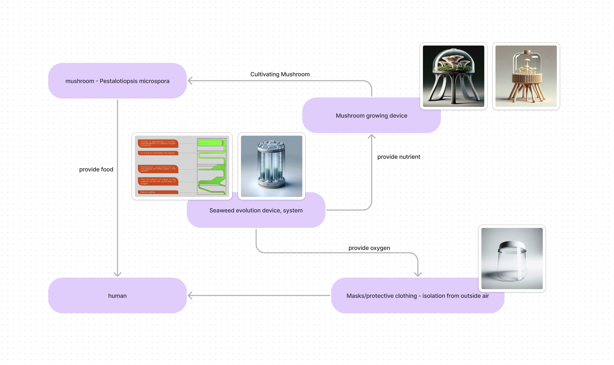

Project1_Archeology of the Futures
In the future, due to meteorite impacts, air pollution and viruses, people will not be able to breathe oxygen in the natural environment. People need to wear masks and clothing to isolate themselves from the air in the environment. Mask for purifies the air and provides oxygen. All the houses have an isolation layer as well as a safety layer, which is wrapped in a special seaweed material that purifies the raw outside air into air that people can breathe. In addition, the Because of air pollution, soil damage, and the difficulty of transporting food, government researchers have developed a polyurethane-degradable mushroom for residents to grow and eat at home. The air purification device in the safety layer will transport the unusable seaweed material to the mushroom growing apparatus, and the waste can also be put into the growing apparatus, which will decompose and transport the purifiable part to the mushrooms, and the rest will be sent to the garbage station.
